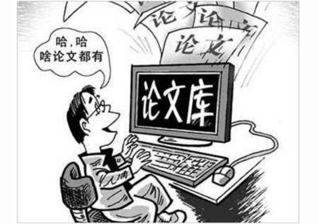

大家都知道，毕业论文是必需要经过论文查重的。那毕业论文查重不过有什么后果呢？就成了大学生们最关心的问题了。今天小编和大家一起来聊聊，毕业论文查重不过后果会怎样？修改之后再次查重不过又会怎样呢？

每个学校都有自己的毕业论文查重结果，一般论文查重率没有达到学校的要求，就视为不合格。如查不合格，就得重新修改。一般导师会给到建议，具体情况得看学校和导师了。
如果修改之后，再次毕业论文查重不过，就不能参与毕业论文答辩。一般学校处理的方式通常包括：延迟答辩、取消答辩资格、处分、开除学籍等，严重的话导师也需要一起承担相应的责任。
毕业论文查重不过有什么后果？通常学校的论文查重率都是分几种情况的，毕竟不可能论文查重超过一点点，也让你不毕业对不对。下面给大家示例来说明一下：
如一个学校的查重率要求在15%之内，那分为以下三种情况处理：
1，论文重复率在15%-25%之间，由导师结合中心章节文字复制比等情况，担任检查并且确定学位论文的内容中是否存在学术不端欣慰，然后按照确定的成果做出详细的处理意见，如果导师认为没有必要进行修改，那么由导师签字认可，如果导师要求进行修改，那么学生就需要再次返回修改后进行复检。
2，论文重复率在25%-40%之间的，论文必须要进行修改，再次修改后进行复检，如果复检结果任然在25%-40%之间，延期半年后方可进行答辩。
3，论文查重率高于40%（含）的，本次请求学位无效，半年后方可再次请求，研究生必须对论文进行仔细的修改，修改后由导师进行严格审阅，半年后把修改后的论文重新提交检测，毕业论文查重通过后进行送审或答辩。
以上可见，毕业论文查重还是非常严格的，建议同学们不要抱有侥幸心理，一定要认认真真的去撰写论文，并且自己提前选择一个专业的毕业论文查重系统，提前进行查重工作。当论文查重检测结果高时，一定要认真根据论文检测报告中的修改建议进行修改。同时再次进行查重检测，直到论文查重率合格为止。